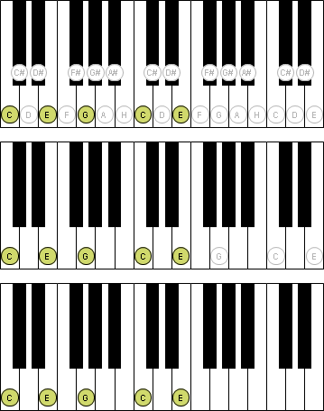

Bei den Benutzervorgaben zu der Klaviatur-Sicht kannst du folgende Einstellungen treffen:
Hier kannst du den von der Klaviatur verwendeten Tonumfang definieren. Die Einstellmöglichkeiten reichen von den Tönen des aktiven Instruments, über diverse Standardklaviaturen (unterschiedlicher Tastenanzahl) bis hin zu einer benutzerdefinierten Einstellung.
Hier kannst du einstellen, ob auch unbenutzte Noten auf der Klaviatur angezeigt werden sollen. Unbenutzte Noten sind Noten, welche bei einem dargestellten Akkord oder einer dargestellten Skala nicht benötigt werden.
Hast du im vorigen Punkt definiert, dass unbenutzte Noten ausgeblendet werden sollen, so kannst du hier die obige Einstellung für dargestellte Akkorde noch ein wenig abändern. Mit dieser Einstellung kannst du noch unbenutzte Noten einblenden, welche in dem Akkord vorkommen. Wenn du also gerade einen C-Dur Akkord darstellst, welcher sich ja aus den Noten C-E-G zusammensetzt, so werden nun alle Noten C-E-G auf der Klaviatur dargestellt.

Hier kannst du einstellen, ob unbenutzte Noten mit einer grauen oder schwarzen Schriftfarbe dargestellt werden sollen.